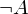
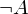
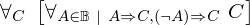
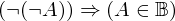
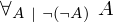

In [1]:
import proveit
from proveit import defaults
from proveit._common_ import A
from proveit.logic import inBool, Not
from proveit.logic.boolean._theorems_ import inBoolIfFalse, inBoolIfTrue, fromExcludedMiddle
context = proveit.Context('..') # the theorem's context is in the parent directory
In [2]:
%proving operandInBool presuming [inBoolIfFalse, inBoolIfTrue, fromExcludedMiddle]
Out[2]:
In [3]:
notA_in_Bool = inBool(Not(A))
Out[3]:
notA_in_Bool: 
In [4]:
A_in_Bool = inBool(A)
Out[4]:
A_in_Bool: 
Prove via the 'law of the excluded middle'. $\lnot A$ must be true or false. Either way, $A$ must be in the set of Booleans.
In [5]:
notA_in_Bool.deriveViaExcludedMiddle(A_in_Bool, assumptions=[notA_in_Bool])
Out[5]:
 ⊢
⊢
In [6]:
%qed
Out[6]:
| step type | requirements | statement | ||
|---|---|---|---|---|
| 0 | generalizaton | 1 | ⊢ | |
| 1 | specialization | 2, 3, 4, 5 | ⊢ | |
 : , : ,  :  :  | ||||
| 2 | theorem | ⊢  | ||
| proveit.logic.boolean.fromExcludedMiddle | ||||
| 3 | assumption | ⊢ | ||
| 4 | hypothetical reasoning | 6 | ⊢  | |
| 5 | hypothetical reasoning | 7 | ⊢  | |
| 6 | specialization | 8, 9 |  ⊢ ⊢ | |
| : | ||||
| 7 | specialization | 10, 11 |  ⊢ ⊢ | |
| : | ||||
| 8 | theorem | ⊢  | ||
| proveit.logic.boolean.inBoolIfFalse | ||||
| 9 | assumption | ⊢ | ||
| 10 | theorem | ⊢  | ||
| proveit.logic.boolean.inBoolIfTrue | ||||
| 11 | specialization | 12, 13 | ⊢ | |
| : | ||||
| 12 | axiom | ⊢  | ||
| proveit.logic.boolean.negation.doubleNegationElim | ||||
| 13 | assumption | ⊢  | ||